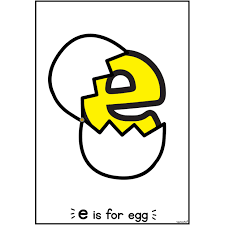
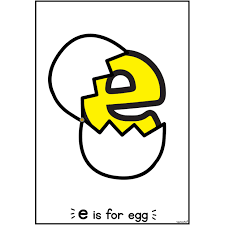
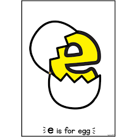
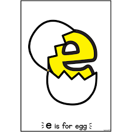

20/10/23 - This week, we learned more about aerospace engineering. I learned many things about what makes aircraft and spacecraft good at flying through observation and reading about it on various websites. We also built a bottle rocket out of a 2 liter soda bottle, cardboard, paper, duct tape, scotch tape, and hot glue. To fuel it, we put water in the rocket and pressurized it. The shape of the fins were what I focused the most on to make it fly. I tried to create the most aerodynamic shape while being able to generate lift at the same time. When we finally flew the rockets, our rocket flew pretty far. I don't think I had many expectations for it, but I'm glad it did well.
26/10/23 - This week, we learned about environmental engineering. We learned that environmental engineering is a type of engineering where engineers work to make the planet livable by studying and treating air pollution, wastewater, solid waste, and many others. To help us learn more about environmental engineering, we created water filters for our challenge this week. The water filter me and my partner made consisted of five layers. Starting from the bottom, a layer of cotton balls, medium-sized stones, sand, another layer of medium-sized stones, and a final top layer of large stones. We wanted to try and filter from smallest to largest particles, with and extra layer of rock over the cotton to help weigh it down. I think our filter worked pretty well, but not well enough to make the black water into white water. This 3-day weekend, I'm excited to go to church, as the high school ministry is doing a lock in from Friday night to saturday morning. I'm not looking forwarrd to the amount of homework I have though.